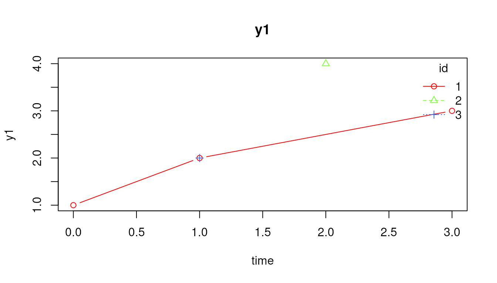
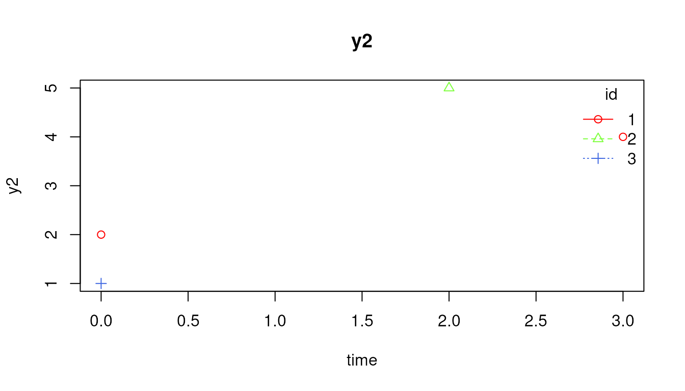
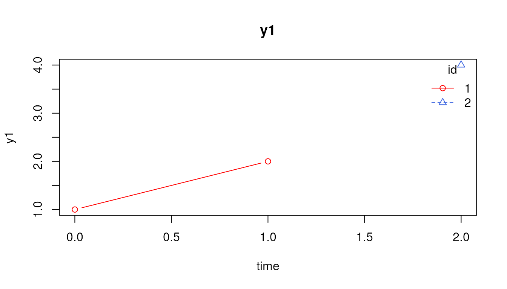
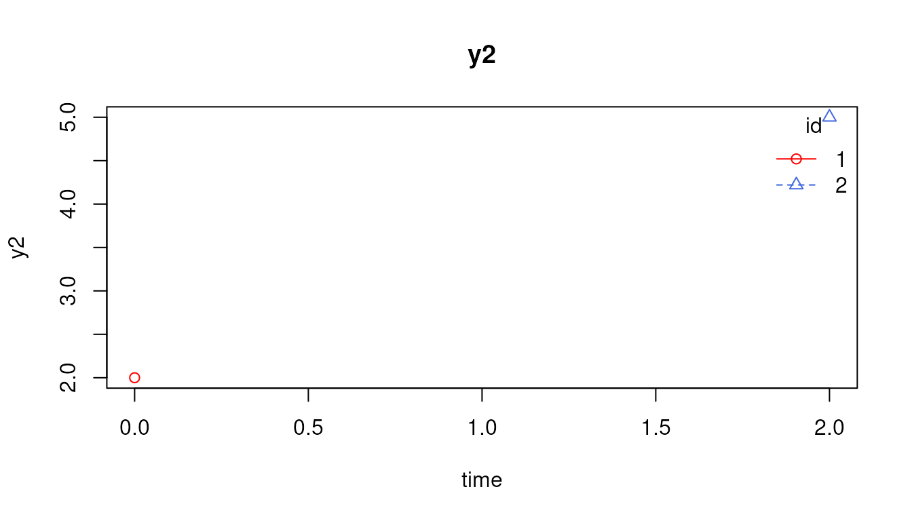
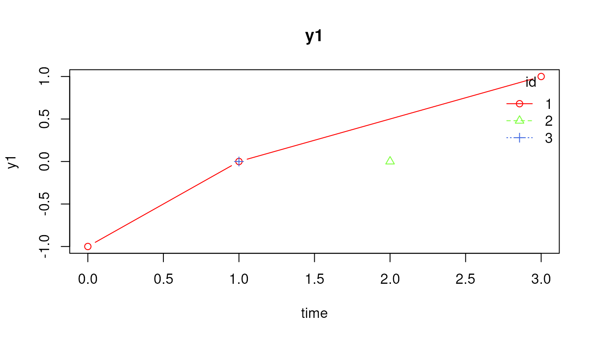
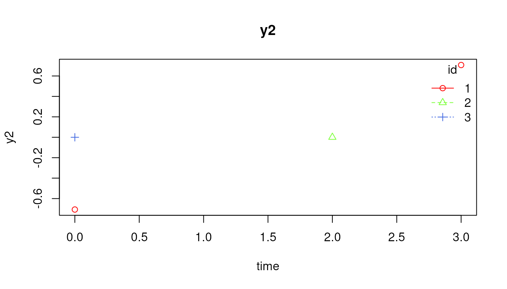

Diagnosing Dynamic Data Step by Step
Ivan Jacob Agaloos Pesigan
Source:vignettes/diagnosing-dynamic-data.Rmd
diagnosing-dynamic-data.RmdThis vignette shows a transparent preprocessing and diagnostic workflow for intensive longitudinal or dynamic modeling data. The goal is to make each decision inspectable rather than hiding all decisions inside one large preprocessing wrapper.
library(dynTools)
data <- data.frame(
id = c(1, 1, 1, 2, 2, 2, 3, 3),
time = c(0, 1, 3, 0, 1, 2, 0, 1),
y1 = c(1, 2, 3, NA, NA, 4, Inf, 2),
y2 = c(2, NA, 4, NA, NA, 5, 1, NaN),
cov = c(10, 11, 13, 20, 21, 22, 30, 31)
)
id <- "id"
time <- "time"
observed <- c("y1", "y2")
covariates <- "cov"1. Check structure
CheckDynData(
data = data,
id = id,
time = time,
observed = observed,
covariates = covariates,
require_unique = FALSE,
require_numeric_time = TRUE,
require_numeric_observed = TRUE,
require_numeric_covariates = FALSE,
min_rows = 1L
)2. Visualize trajectories by ID
A visual check is a useful first diagnostic step.
PlotByID() overlays the observed trajectories by ID.
Non-finite observed values such as NaN, Inf,
and -Inf are treated as missing for plotting, but they
should still be addressed explicitly in the numerical diagnostics.
PlotByID(
data = data,
id = id,
time = time,
observed = observed,
legend = TRUE,
ask = FALSE
)

The same plot can be restricted to a subset of IDs or a time range when there are many individuals or many occasions.
PlotByID(
data = data,
id = id,
time = time,
observed = observed,
ids = c(1, 2),
times = c(0, 2),
legend = TRUE,
ask = FALSE
)

3. Remove rows with no finite observed values
DeleteObservedAllNA() is useful when rows with no
observed measurements should not contribute to elapsed-time construction
or modeling.
data_rows <- DeleteObservedAllNA(
data = data,
id = id,
time = time,
observed = observed,
covariates = covariates
)
data_rows
#> id time y1 y2 cov
#> 1 1 0 1 2 10
#> 2 1 1 2 NA 11
#> 3 1 3 3 4 13
#> 4 2 2 4 5 22
#> 5 3 0 Inf 1 30
#> 6 3 1 2 NaN 314. Diagnose IDs before dropping anything
diagnostics <- DiagnosticsByID(
data = data_rows,
id = id,
time = time,
observed = observed,
covariates = covariates,
min_nonmissing = 1L,
extreme_cut = c(4, 5, 6),
sd_cut = c(0.10, 0.05)
)
diagnostics
#> id n_rows n_observed_rows n_complete_rows prop_all_missing
#> 1 1 3 3 2 0
#> 2 2 1 1 1 0
#> 3 3 2 2 0 0
#> n_duplicate_id_time n_nan_total n_inf_total n_nonfinite_total min_time
#> 1 0 0 0 0 0
#> 2 0 0 0 0 2
#> 3 0 1 1 2 0
#> max_time max_obs_gap median_obs_gap mean_obs_gap miss_y1 n_y1 n_finite_y1
#> 1 3 2 1.5 1.5 0 3 3
#> 2 2 NA NA NA 0 1 1
#> 3 1 1 1.0 1.0 0 2 1
#> n_nan_y1 n_inf_y1 n_nonfinite_y1 sd_y1 maxabs_y1 n_abs_gt4_y1 n_abs_gt5_y1
#> 1 0 0 0 1 3 0 0
#> 2 0 0 0 NA 4 0 0
#> 3 0 1 1 NA 2 0 0
#> n_abs_gt6_y1 miss_y2 n_y2 n_finite_y2 n_nan_y2 n_inf_y2 n_nonfinite_y2
#> 1 0 0.3333333 2 2 0 0 0
#> 2 0 0.0000000 1 1 0 0 0
#> 3 0 0.5000000 1 1 1 0 1
#> sd_y2 maxabs_y2 n_abs_gt4_y2 n_abs_gt5_y2 n_abs_gt6_y2 min_sd median_sd
#> 1 1.414214 4 0 0 0 1 1.207107
#> 2 NA 5 1 0 0 NA NA
#> 3 NA 1 0 0 0 NA NA
#> min_sd_variable max_abs_any max_abs_variable n_var_sd_lt_0_1 n_var_sd_lt_0_05
#> 1 y1 4 y2 0 0
#> 2 <NA> 5 y2 0 0
#> 3 <NA> 2 y1 0 0
#> n_abs_gt4_total n_abs_gt5_total n_abs_gt6_total
#> 1 0 0 0
#> 2 1 0 0
#> 3 0 0 05. Convert diagnostics to flags
flags <- FlagDiagnosticsByID(
x = diagnostics,
min_observed_rows = 2L,
min_complete_rows = NULL,
max_prop_all_missing = 0.95,
max_gap = NULL,
max_median_gap = NULL,
min_sd = NULL,
extreme_cut = 6,
drop_score_cut = 2L
)
flags[flags$flag_any, c("id", "priority_score", "flag_reason")]
#> id priority_score flag_reason
#> 2 2 1 n_obs_lt_2
#> 3 3 1 nonfinite_observed6. Choose sensitivity-analysis candidates
drop_id <- GetDropID(
x = flags,
flagged_only = TRUE
)
drop_id
#> [1] 2The returned IDs are candidates for exclusion or sensitivity analysis, not automatic exclusions.
7. Optional detrending and scaling diagnostics
scale_diagnostics <- DiagnoseScaleByID(
data = data_rows,
id = id,
time = time,
observed = observed,
sd_min = 0.10,
z_cut = 6,
min_n = 2L,
flagged_only = FALSE
)
scale_diagnostics
#> id variable n_total n_finite n_missing n_na n_nan n_inf mean sd min max
#> 1 1 y1 3 3 0 0 0 0 2 1.000000 1 3
#> 2 1 y2 3 2 1 1 0 0 3 1.414214 2 4
#> 3 2 y1 1 1 0 0 0 0 4 NA 4 4
#> 4 2 y2 1 1 0 0 0 0 5 NA 5 5
#> 5 3 y1 2 1 1 0 0 1 2 NA 2 2
#> 6 3 y2 2 1 1 1 1 0 1 NA 1 1
#> range max_abs min_z_after_scaling max_z_after_scaling max_abs_z_after_scaling
#> 1 2 3 -1.0000000 1.0000000 1.0000000
#> 2 2 4 -0.7071068 0.7071068 0.7071068
#> 3 0 4 NA NA NA
#> 4 0 5 NA NA NA
#> 5 0 2 NA NA NA
#> 6 0 1 NA NA NA
#> time_max_abs_z value_max_abs_z row_max_abs_z flag_low_n flag_nonfinite
#> 1 0 1 1 FALSE FALSE
#> 2 0 2 1 FALSE FALSE
#> 3 NA NA NA TRUE FALSE
#> 4 NA NA NA TRUE FALSE
#> 5 NA NA NA TRUE TRUE
#> 6 NA NA NA TRUE TRUE
#> flag_zero_sd flag_low_sd flag_extreme_z flag
#> 1 FALSE FALSE FALSE FALSE
#> 2 FALSE FALSE FALSE FALSE
#> 3 FALSE FALSE FALSE TRUE
#> 4 FALSE FALSE FALSE TRUE
#> 5 FALSE FALSE FALSE TRUE
#> 6 FALSE FALSE FALSE TRUE8. Optional transformations
After inspecting diagnostics, apply transformations explicitly.
data_scaled <- ScaleByID(
data = data_rows,
id = id,
time = time,
observed = observed,
covariates = NULL
)
data_scaled
#> id time y1 y2
#> 1 1 0 -1 -0.7071068
#> 2 1 1 0 NA
#> 3 1 3 1 0.7071068
#> 4 2 2 0 0.0000000
#> 5 3 0 NA 0.0000000
#> 6 3 1 0 NAThe transformed data can also be plotted as a final check.
PlotByID(
data = data_scaled,
id = id,
time = time,
observed = observed,
legend = TRUE,
ask = FALSE
)

This step-by-step workflow keeps the audit trail clear: diagnose first, decide second, transform third.